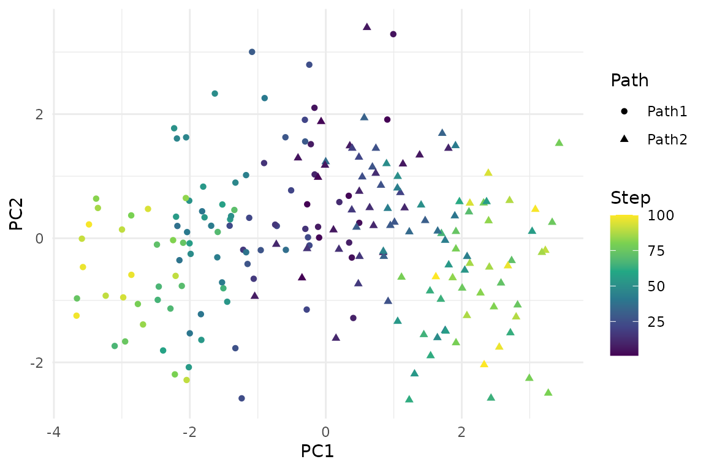
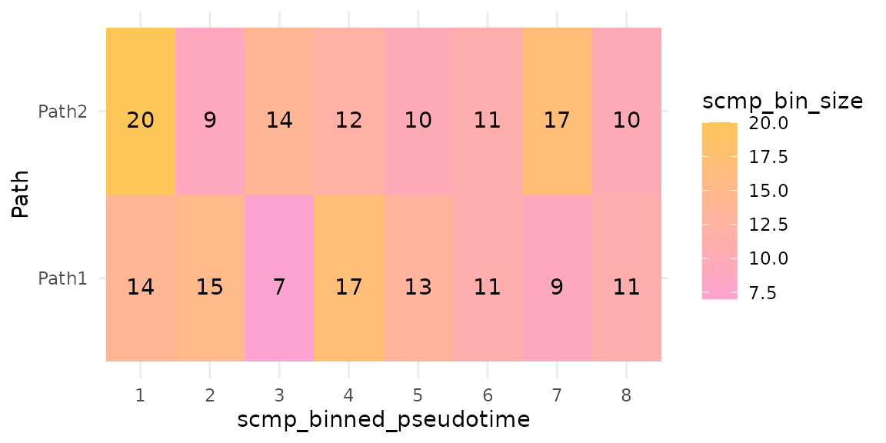
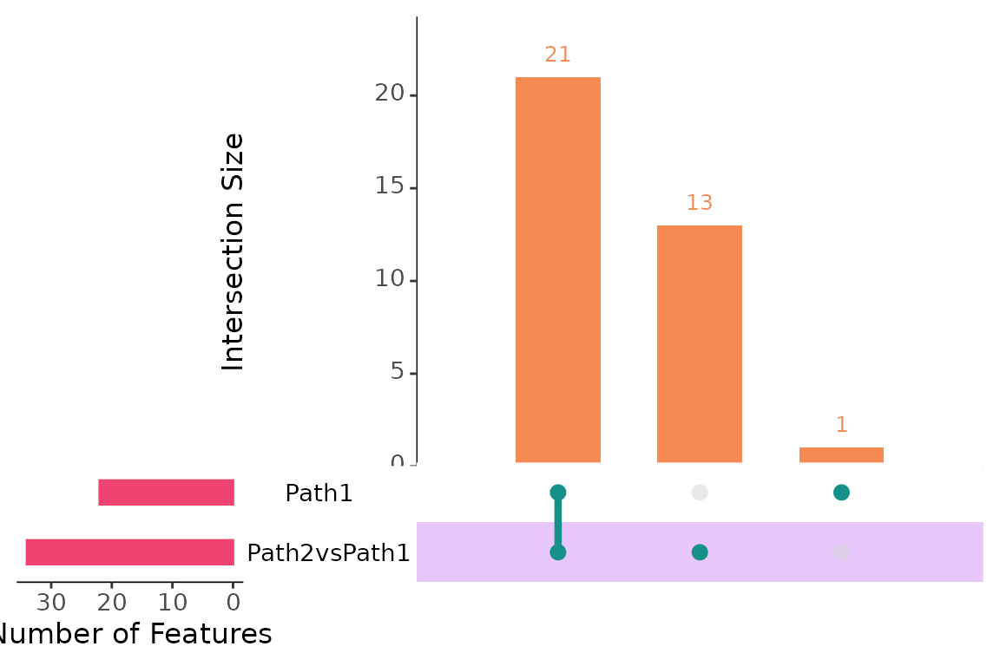
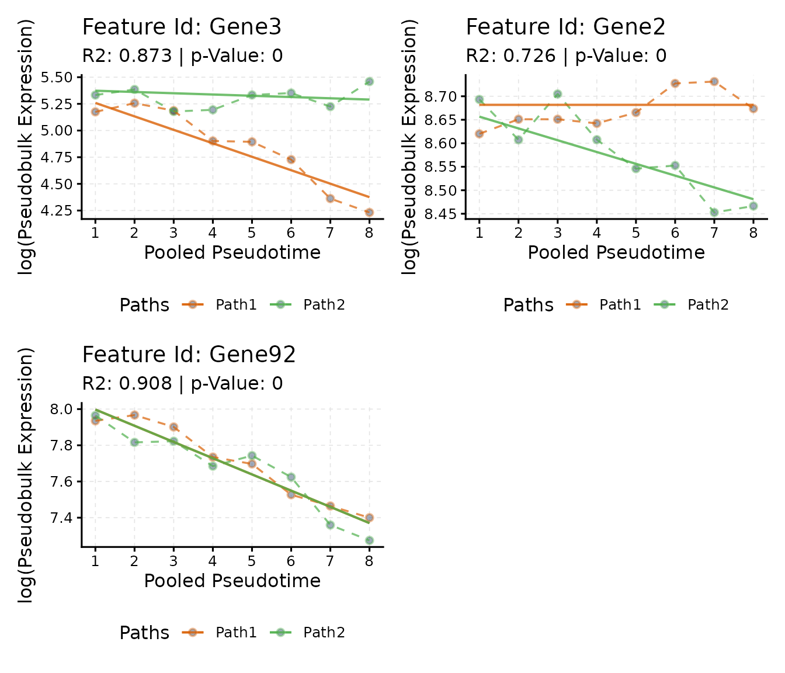
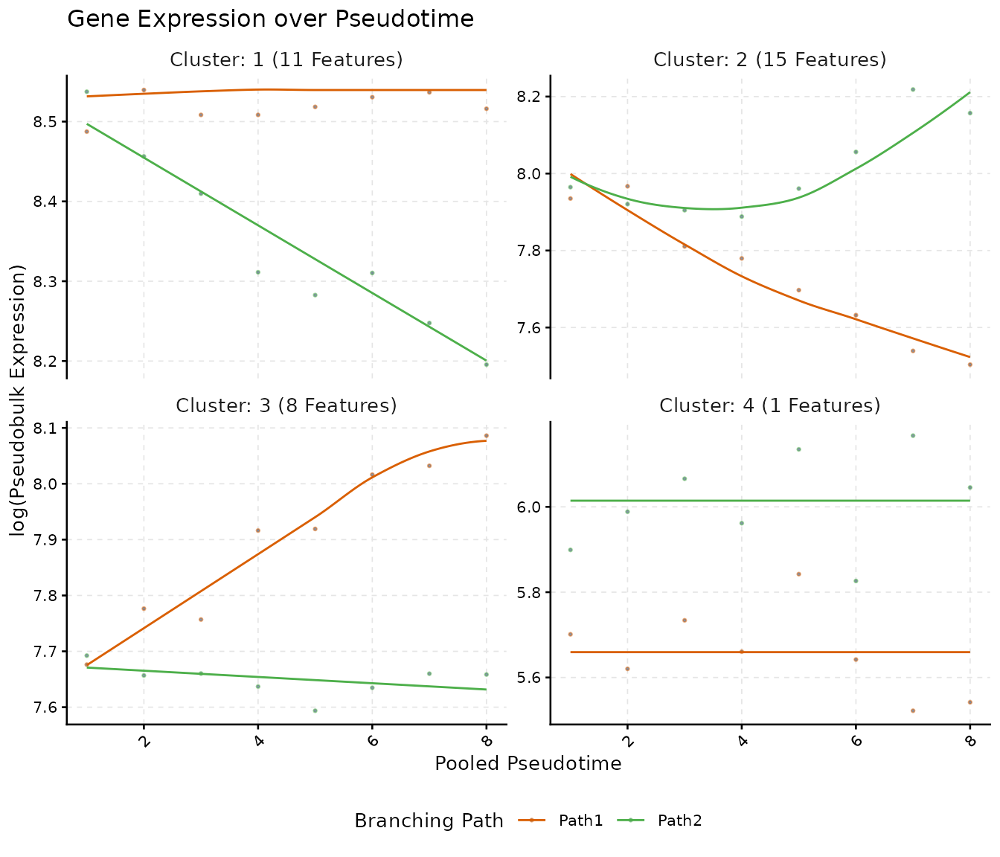

Abstract
scMaSigPro finds genes whose expression changes along
pseudotime and differs between the branching paths of a
single-cell trajectory. This vignette runs the whole workflow on a
small simulated data set, from a SingleCellExperiment
to lists of genes, plots and clusters, and checks the genes it
finds against the truth of the simulation.
Introduction
A trajectory inference tool orders the cells of a single-cell RNA-seq experiment along a pseudotime and splits them into branching paths, such as the paths from a progenitor to two cell types. scMaSigPro finds the genes whose expression changes along the pseudotime of a path and the genes whose expression differs between paths (Srivastava et al. 2024). It brings the method of the maSigPro package for time-course experiments (Conesa et al. 2006; Nueda et al. 2014) to single cells in two steps:
- The cells of each path are pooled into bins along pseudotime, and their counts are added up into pseudo-bulk counts. The bins play the part of the time points of a time-course experiment.
- A polynomial generalised linear model in the binned pseudotime, with one set of terms per path, is fitted to the pseudo-bulk counts of each gene, by default with a negative binomial distribution and an offset for the sequencing depth of each bin. The genes whose model is better than a flat line, and the terms that make it so, tell how a gene changes along each path.
This vignette runs these steps on splat.sim, a small
data set bundled with the package. The other vignettes go further:
- Trajectory input: pseudotime and path labels from slingshot, Monocle3 or another tool.
- Shared root: trajectories whose paths share their first cells.
- Model and tuning: the model, its settings and how they change the results.
- maSigPro and the ScMaSigPro class: the object, its accessors and the equivalence with maSigPro.
- Frequently asked questions.
Installation
scMaSigPro is installed from GitHub with BiocManager, which also installs its Bioconductor dependencies:
if (!requireNamespace("BiocManager", quietly = TRUE)) {
install.packages("BiocManager")
}
BiocManager::install("BioBam/scMaSigPro")The data
splat.sim is a SingleCellExperiment with
the counts of 100 genes in 200 cells, simulated with splatter (Zappia et al. 2017) along two paths that start
from the same cells. Each cell has a simulated step along its path,
which serves as its pseudotime, and the label of its path.
library(scMaSigPro)
library(SingleCellExperiment)
library(ggplot2)
data("splat.sim", package = "scMaSigPro")
splat.sim
#> class: SingleCellExperiment
#> dim: 100 200
#> metadata(0):
#> assays(1): counts
#> rownames(100): Gene1 Gene2 ... Gene99 Gene100
#> rowData names(10): Gene BaseGeneMean ... SigmaFacPath1 SigmaFacPath2
#> colnames(200): Cell1 Cell2 ... Cell199 Cell200
#> colData names(6): Cell Batch ... Step sizeFactor
#> reducedDimNames(1): PCA
#> mainExpName: NULL
#> altExpNames(0):
head(colData(splat.sim)[, c("Step", "Group")])
#> DataFrame with 6 rows and 2 columns
#> Step Group
#> <numeric> <factor>
#> Cell1 42 Path2
#> Cell2 41 Path1
#> Cell3 23 Path1
#> Cell4 42 Path1
#> Cell5 79 Path2
#> Cell6 1 Path1The first two principal components show the two paths,
Path1 and Path2, leaving the same starting
cells:
pca <- as.data.frame(reducedDim(splat.sim, "PCA"))
pca$Step <- colData(splat.sim)$Step
pca$Path <- colData(splat.sim)$Group
ggplot(pca, aes(x = PC1, y = PC2, colour = Step, shape = Path)) +
geom_point() +
scale_colour_viridis_c() +
theme_minimal()
The workflow
Create the object
scMaSigPro keeps the data and every result in an object of class
ScMaSigPro. as_scmp() creates it from a
SingleCellExperiment whose cell metadata holds the
pseudotime and the path of each cell; here they are the
Step and Group columns.
create_scmp() does the same from a count matrix and a table
of cell metadata.
Bin the cells along pseudotime
sc.squeeze() divides the pseudotime of each path into
bins of equal width and adds up the counts of the cells of each bin. The
number of bins comes from a histogram rule, by default that of Sturges,
log2(n) + 1 bins for the n cells of a path, rounded up.
scmp_ob <- sc.squeeze(scmp_ob)
bins <- cDense(scmp_ob)
table(bins$Path)
#>
#> Path1 Path2
#> 8 8The 16 bins hold between 7 and 20 cells. plotBinTile()
shows the number of cells of each bin along the binned pseudotime of
each path:
plotBinTile(scmp_ob)
Set up the polynomial model
sc.set.poly() builds the design of the model. With two
paths and a polynomial of degree 1, the model of the expected count of a
gene in a bin is
where
is the binned pseudotime and
is 1 for the bins of Path2 and 0 for those of
Path1, the reference path.
and
describe the reference path;
and
are the differences of Path2 from it, at the start and in
slope.
scmp_ob <- sc.set.poly(scmp_ob, poly_degree = 1)
showPoly(scmp_ob)
#> [1] "beta0 + beta1*Path2vsPath1 + beta2*scmp_binned_pseudotime + beta3*scmp_binned_pseudotimexPath2"A higher degree adds the squares, cubes and so on of and their products with , for profiles that rise and fall; the Model and tuning vignette compares degrees.
Find the genes that change
sc.p.vector() fits the full model of each gene and tests
it against a model with the intercept only, a flat profile. The genes
whose adjusted p-value is at most p_value have a non-flat
profile.
scmp_ob <- sc.p.vector(scmp_ob, p_value = 0.05, verbose = FALSE)
res <- scmpResults(scmp_ob)
sum(res$non_flat)
#> [1] 5050 of the 100 genes have a non-flat profile.
Select the significant terms
sc.t.fit() then removes, one at a time, the terms of the
model of each of these genes that are not significant (backward stepwise
selection). What is left says how the gene changes: a gene with only
besides the intercept, for example, has the same expression in both
paths at the start but a different slope.
scmp_ob <- sc.t.fit(scmp_ob, verbose = FALSE)
head(showSol(scmp_ob)[, c("p-value", "R-squared")])
#> p-value R-squared
#> Gene2 1.601390e-09 0.7260152
#> Gene3 3.985890e-20 0.8731628
#> Gene4 1.230465e-66 0.9553623
#> Gene9 7.977339e-35 0.9308984
#> Gene10 7.184117e-269 0.9894360
#> Gene11 4.309154e-03 0.5235111List the significant genes
sc.filter() keeps the genes whose selected model
explains enough of their variation, measured by its R-squared, and sorts
them into lists. With vars = "groups" there is one list per
path: the list of the reference path holds the genes that change along
it, and the list Path2vsPath1 the genes whose profile in
Path2 differs from that in Path1.
scmp_ob <- sc.filter(scmp_ob, rsq = 0.7, vars = "groups")
res <- scmpResults(scmp_ob)
table(Path1 = res$sig_Path1, Path2vsPath1 = res$sig_Path2vsPath1)
#> Path2vsPath1
#> Path1 FALSE TRUE
#> FALSE 65 13
#> TRUE 1 21The genes in both lists change along Path1 and differ in
Path2; those only in Path2vsPath1 are flat in
Path1 but change in Path2; those only in
Path1 change along it in the same way in both paths.
plotIntersect() shows how the lists overlap; it draws an
UpSet plot with the UpSetR package (Conway et al.
2017):
plotIntersect(scmp_ob)
Plot gene trends
plotTrend() draws the pseudo-bulk counts of a gene,
divided by the size factor of their bin, on the log scale against the
binned pseudotime, with the fitted curve of each path. Here is one gene
of each kind:
genes <- c(both[1], only_diff[1], only_ref[1])
plots <- lapply(genes, function(g) plotTrend(scmp_ob, g, lines = TRUE))
patchwork::wrap_plots(plots, ncol = 2)
Cluster the trends
sc.cluster.trend() groups the genes of the lists by the
coefficients of their models, here with hierarchical clustering into
four clusters; k-means and the model-based clustering of mclust (Scrucca et al. 2016) are the other methods
(cluster_method). plotTrendCluster() draws the
trends of each cluster:
scmp_ob <- sc.cluster.trend(scmp_ob, geneSet = "union", k = 4)
plotTrendCluster(scmp_ob, verbose = FALSE)
Get the results
scmpResults() returns every result with one row per
gene: the p-value of the full model and whether the profile is non-flat
(sc.p.vector()), the p-value and R-squared of the selected
model and whether the gene has influential observations
(sc.t.fit()), one column per gene list
(sc.filter()) and the cluster
(sc.cluster.trend()).
head(scmpResults(scmp_ob))
#> DataFrame with 6 rows and 9 columns
#> p_value adj_p_value non_flat model_p_value r_squared influential
#> <numeric> <numeric> <logical> <numeric> <numeric> <logical>
#> Gene1 2.21646e-01 3.46322e-01 FALSE NA NA FALSE
#> Gene2 1.30835e-13 4.84576e-13 TRUE 1.60139e-09 0.726015 FALSE
#> Gene3 2.51249e-24 1.14204e-23 TRUE 3.98589e-20 0.873163 FALSE
#> Gene4 1.96112e-56 1.96112e-55 TRUE 1.23046e-66 0.955362 FALSE
#> Gene5 6.16240e-02 1.04447e-01 FALSE NA NA FALSE
#> Gene6 5.80848e-01 7.21780e-01 FALSE NA NA FALSE
#> sig_Path2vsPath1 sig_Path1 cluster
#> <logical> <logical> <integer>
#> Gene1 FALSE FALSE NA
#> Gene2 TRUE FALSE 1
#> Gene3 TRUE TRUE 2
#> Gene4 TRUE FALSE 2
#> Gene5 FALSE FALSE NA
#> Gene6 FALSE FALSE NAscmpToRowData() writes these columns, with the prefix
scmp_, into the rowData() of a
SingleCellExperiment, so that they travel with the
data:
splat.sim <- scmpToRowData(splat.sim, scmp_ob)
head(rowData(splat.sim)[, c("scmp_non_flat", "scmp_cluster")])
#> DataFrame with 6 rows and 2 columns
#> scmp_non_flat scmp_cluster
#> <logical> <integer>
#> Gene1 FALSE NA
#> Gene2 TRUE 1
#> Gene3 TRUE 2
#> Gene4 TRUE 2
#> Gene5 FALSE NA
#> Gene6 FALSE NACompare with the simulated truth
splatter stores in the rowData() how it simulated each
gene. DEFacPath1 and DEFacPath2 are the
factors by which the expression of a gene changes from the start to the
end of each path: a gene whose factor is not 1 on a path changes along
that path. In splat.sim every such gene has different
factors on the two paths, so it also differs between them.
truth <- rowData(splat.sim)
changes <- truth$DEFacPath1 != 1 | truth$DEFacPath2 != 1
names(changes) <- rownames(truth)
found <- scmpResults(scmp_ob)$non_flat
table(non_flat = found, simulated = changes[rownames(scmpResults(scmp_ob))])
#> simulated
#> non_flat FALSE TRUE
#> FALSE 37 13
#> TRUE 7 43Of the 50 genes with a non-flat profile, 43 were simulated to change (a precision of 0.86), and they are 43 of the 56 genes simulated to change (a recall of 0.77). The Model and tuning vignette shows how the settings move these numbers.
The trends of the plotted genes follow the factors of the simulation:
as.data.frame(truth[genes, c("DEFacPath1", "DEFacPath2")])
#> DEFacPath1 DEFacPath2
#> Gene3 0.3643974 1.0000000
#> Gene2 1.0000000 0.8224767
#> Gene92 0.4996190 0.4264288The bundled object scmp.ob holds the result of this
workflow, so the examples of the help pages and the other vignettes can
start from it:
data("scmp.ob", package = "scMaSigPro")
identical(scmpResults(scmp.ob), scmpResults(scmp_ob))
#> [1] FALSESession information
sessionInfo()
#> R version 4.6.1 (2026-06-24)
#> Platform: x86_64-pc-linux-gnu
#> Running under: Ubuntu 24.04.5 LTS
#>
#> Matrix products: default
#> BLAS: /usr/lib/x86_64-linux-gnu/openblas-pthread/libblas.so.3
#> LAPACK: /usr/lib/x86_64-linux-gnu/openblas-pthread/libopenblasp-r0.3.26.so; LAPACK version 3.12.0
#>
#> locale:
#> [1] LC_CTYPE=C.UTF-8 LC_NUMERIC=C LC_TIME=C.UTF-8
#> [4] LC_COLLATE=C.UTF-8 LC_MONETARY=C.UTF-8 LC_MESSAGES=C.UTF-8
#> [7] LC_PAPER=C.UTF-8 LC_NAME=C LC_ADDRESS=C
#> [10] LC_TELEPHONE=C LC_MEASUREMENT=C.UTF-8 LC_IDENTIFICATION=C
#>
#> time zone: UTC
#> tzcode source: system (glibc)
#>
#> attached base packages:
#> [1] stats4 stats graphics grDevices utils datasets methods
#> [8] base
#>
#> other attached packages:
#> [1] ggplot2_4.0.3 SingleCellExperiment_1.34.0
#> [3] SummarizedExperiment_1.42.0 Biobase_2.72.0
#> [5] GenomicRanges_1.64.0 Seqinfo_1.2.0
#> [7] IRanges_2.46.0 S4Vectors_0.50.3
#> [9] BiocGenerics_0.58.1 generics_0.1.4
#> [11] MatrixGenerics_1.24.0 matrixStats_1.5.0
#> [13] scMaSigPro_0.6.0 BiocStyle_2.40.0
#>
#> loaded via a namespace (and not attached):
#> [1] gtable_0.3.6 xfun_0.62 bslib_0.12.0
#> [4] lattice_0.22-9 vctrs_0.7.3 tools_4.6.1
#> [7] parallel_4.6.1 Matrix_1.7-5 RColorBrewer_1.1-3
#> [10] S7_0.2.2 desc_1.4.3 lifecycle_1.0.5
#> [13] compiler_4.6.1 farver_2.1.2 textshaping_1.0.5
#> [16] codetools_0.2-20 htmltools_0.5.9 sass_0.4.10
#> [19] yaml_2.3.12 pkgdown_2.2.1 pillar_1.11.1
#> [22] jquerylib_0.1.4 MASS_7.3-65 BiocParallel_1.46.0
#> [25] DelayedArray_0.38.2 cachem_1.1.0 abind_1.4-8
#> [28] nlme_3.1-169 digest_0.6.39 bookdown_0.48
#> [31] splines_4.6.1 labeling_0.4.3 fastmap_1.2.0
#> [34] grid_4.6.1 cli_3.6.6 SparseArray_1.12.3
#> [37] patchwork_1.3.2 S4Arrays_1.12.1 withr_3.0.3
#> [40] scales_1.4.0 rmarkdown_2.32 XVector_0.52.0
#> [43] otel_0.2.0 gridExtra_2.3.1 ragg_1.5.2
#> [46] evaluate_1.0.5 knitr_1.52 UpSetR_1.4.1
#> [49] viridisLite_0.4.3 mgcv_1.9-4 rlang_1.3.0
#> [52] Rcpp_1.1.2 glue_1.8.1 BiocManager_1.30.27
#> [55] jsonlite_2.0.0 R6_2.6.1 plyr_1.8.9
#> [58] systemfonts_1.3.2 fs_2.1.0